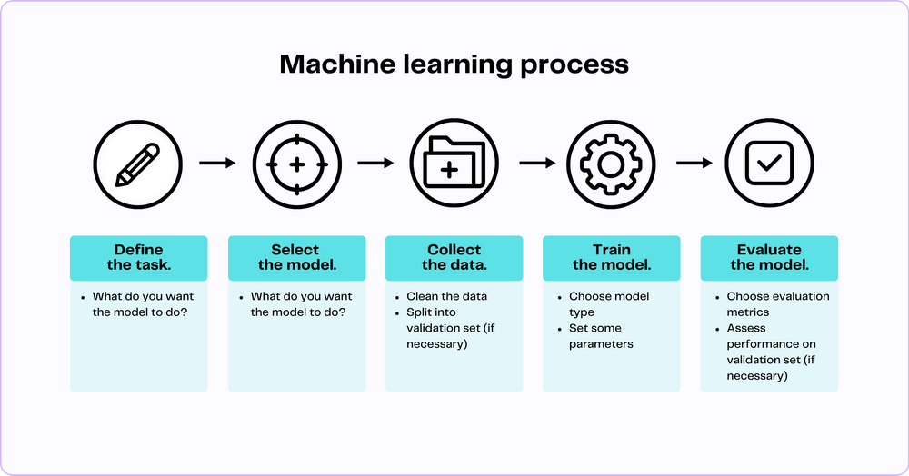

AI. Generative AI. Machine learning. Deep learning. Data science. LLMs. GPTs. Foundation models. LLaMA. Alpaca. Stable diffusion. It's impossible to keep it all straight.
The never-ending list of overlapping AI terminology is overbearing, confusing, and abstract. The nuances among these terms are difficult to grasp even for some people working in the field. Couple that with all the hype and expectations surrounding AI and you end up with a fractured and incomplete understanding of artificial intelligence and the processes that drive it.
To help clear the fog, we've curated a selection of the best diagrams to understand AI from across the web. These visual aids will provide a clear and concise introduction to generative AI, simplifying complex concepts and making the abstract tangible.
Diagram #1: The Artificial Intelligence Taxonomy
Disentangle confusing AI terminology
In his post Demystifying AI: A Practical Guide to Key Terminology, Tobias Zwingmann expertly defines nine key terms in the field of AI, breaking them down in a hierarchical manner. In addition to providing comprehensive and accessible definitions for each of these critical terms, his Artificial Intelligence Taxonomy diagram illustrates the relationships between terms in an intuitive and uncluttered manner.
Diagram #2: The Map of Artificial Intelligence
Explore the specific tasks AI can tackle
In his LinkedIn post entitled ChatGPT is not AI!, Dr. Milan Milanovic proves his point that ChatGPT is just a small (albeit important) part of the broader AI landscape. While Diagram #1 distinguishes between common AI terms and concepts, this image explores the hierarchy of common AI tasks and applications and illustrates both a global and local view of the AI landscape. This image is a valuable starting point for anyone diving into AI. It not only provides a clear hierarchy of AI tasks and applications but also offers a useful guide for researching specific terms online.
Diagram #3: The Machine Learning Process
Understand how an AI model is created
In our introductory post, What is Generative AI? A Comprehensive Guide for Everyone, we provide a general overview of common generative AI terminology while also diving deeper into the specifics of machine learning. In our Machine Learning Process diagram below, we outline the specific steps needed to train a machine learning model. While the methods for training models vary depending on task, model type, and model architecture, the following diagram provides an excellent general overview of how models are trained from start to finish.

Diagram #4: Getting the Most Out of Large Language Models
Figure out how to "customize" LLMs
Large language models (LLMs) like ChatGPT are great at performing general tasks and have a broad knowledge base. However, when prompted to complete more specialized, specific tasks, they often flop. This is because their training data, while extensive, often lack the depth of knowledge and context required in certain niche or expert domains. There are several machine learning techniques that help LLMs perform better on downstream tasks, enhance their knowledge of specialized data, and reduce the risk of spitting out inaccurate or harmful content. In his article, Maximizing the Potential of Large Language Models, Ben Lorica clearly explains how three of these techniques, fine-tuning, prompt engineering, and reinforcement learning from human feedback (RLHF) are used to tame LLMs.
Diagram #5: The Illustrated Transformer
Learn the full transformer architecture with sequential imagery
Jay Alammar's The Illustrated Transformer is one of the most epic data science blog posts of all time and for good reason. A transformer model is a machine learning model frequently used in text processing and generation tasks. In this post, Jay goes explains how transformer models work in an incredibly accessible way. Using progressive illustrations, he simplifies complex concepts, making this intricate technology accessible and engaging for all readers, regardless of their technical background. These are some of the most technical and aesthetic AI diagrams that you'll come across from an independent blogger.
Conclusion
Understanding AI is easier with diagrams
Understanding the AI landscape can be challenging due to its complex terminology and diverse applications. However, the curated diagrams in this post serve as a valuable resource for simplifying these complexities. They provide a clear introduction to generative AI, machine learning processes, and transformer models, making them accessible to both beginners and professionals. These diagrams not only help disentangle confusing AI terminology but also illuminate the broader AI landscape and the specific tasks AI can tackle.
As AI continues to evolve, these resources offer a solid foundation for further exploration and understanding, serving as a starting point for anyone looking to dive deeper into this fascinating field.